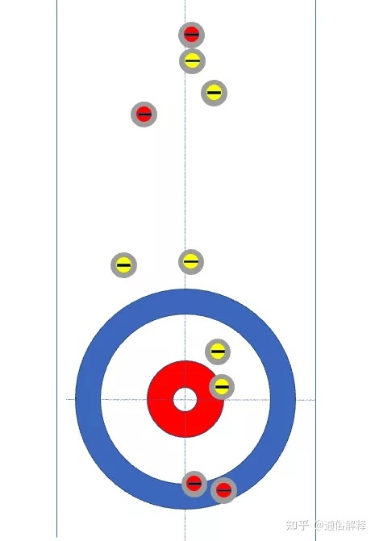

北京冬奥会观后感
前言
这篇文章最初写于 2022 年 2 月 21 日。2023 年 9 月 24 日初次改写为博文。
只进行了部分格式修正以适应博文格式，未进行内容的修改。
本篇博文并不是严格的观后感，更像是个应付作业过程中思绪发散写下的东西。
此乃本文之撰因（这符合哪个我也不清楚）
然后本来打算将全文（文字版）弄到腾讯文档里面的，但无奈每次一复制单元格就自动扩张，让我甚是尴尬（尤其是同时还有别的同学在编辑，zh 还在他的单元格写「你的怎么这么长」……）
因此一怒之下用「寒假完整地收看了北京冬奥会，印象深刻。」概括了下文。
第一次完完整整地实看了奥运会（冬奥会），开幕式从二十四节气倒计时到五环破冰而出，从中国奥运代表队喜气洋洋地压轴走进会场到雪花火炬的简约朴素的壮观视觉盛宴仍历历在目。
没有想到我冬奥会看的最多的项目居然是被称为「毫无意义」「无聊」「贵族运动」的冰壶。一开始进去看时是混双冰壶混合赛（当时中国队已经取得两连胜），让我最为印象深刻的是男选手凌智在冰面上拼命刷地和女选手范苏圆在后面喊 hurry 的场景。由于不懂规则（虽然有查过，但是规则是男子女子比赛的，混双只有五个壶，就没看下去了），让我对这个项目也是嗤之以鼻：确实，竞技性弱，比赛节奏慢，观赏性不强。但是它还是慢慢把我吸引住了，此后每一场中国队的比赛我都看了（结果混双就再也没赢过了），也自己从比赛中摸索出了规律，什么计分规则啊，五壶保护制啊，后手优势啊。也会在中国队出现简单失误握拳跳脚，怒其不争，然后再收看下一场比赛；也会在一些队伍发出漂亮一投/击时为他们鼓掌喝彩……



然后让我印象极为深刻的便是花样滑冰了。男子花样滑冰的陈巍发挥稳定，金牌名副其实；羽生结弦坚定执着，值得人们的掌声。但我最想说的还是女子花样滑冰：赛前饱受期望包揽三牌的「俄萝」——「K 宝」卡米拉·瓦利耶娃、「千金」安娜·谢尔巴科娃和「莎莎」亚历山德拉·特鲁索娃。然而被称为夺冠大热门的 K 宝在俄奥队花样滑冰团体赛获得金牌后深陷禁药风波，在女子赛的短节目发挥不佳（虽然仍然第一）。尽管经过一系列操作，K 宝没有被禁赛，但是也被要求如果获得前三名将没有颁奖仪式，这联想到最终结果，不禁让人浮想联翩。最后千金以稳定的发挥与优雅的表演斩获金牌，莎莎完成了史无前例的五个四周跳，位列第二，日本选手坂本花织则是获得了铜牌，K 宝自由滑大失误屈居第四。然而后面出现的事让人不禁为她们同情：莎莎即使完成了史无前例的 54 仍没能获得冠军；千金虽得冠但无人问津；K 宝就更不用说了。最为高兴的竟是日本选手，让人以为好像是她得了冠一样。哀兮，哀兮。
其他的项目也都过过目，但终究难在我心中占据一席之地。
最后便是昨日补作业同时看的闭幕式了（虽然全程都在看，实际上什么也没写）：有十二生肖车、中国结、折柳送别寄情（惭愧，不知道这个典故）、感谢志愿者仪式、五环梦幻联动、米兰八分钟等等。
最后庆祝中国冬奥会成绩取得历史性的突破——9 金 4 银 2 铜，位列第三。
以上就是一个周期两年的体育观众的心里话。